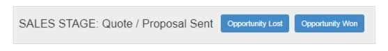

Whether you deal with a contract manufacturer or have your own factory, this module enables you to track production and stay on top of any issues that may arise.
This dashboard allows you to easily manage jobs in production and quickly view status, inspections, and issues related to the jobs. There are three dashboard screens as below:
Work in Progress
Work Scheduled
Issue Tracker (for all jobs)
Note
There is also a version of this dashboard available for factory shop floor login on a communal screen.
The job list is automatically filtered by status to show on either the ‘in progress’ or ‘scheduled’ screen.
If you click on the job reference that displays all related information on the RHS of the screen.
The job list displays all jobs lined up with the following information:
Date the production started, or is due to start
The expected duration of production
The scheduled installation date
What is to be produced
The components to be consumed
Job status may be updated by clicking one of the buttons displaying options from the status flow.
To facilitate quality inspections during different stages of the production process, an inspection checklist configured in “set-up” displays below the job status.
Issues encountered during the job can be recorded and tracked, and these issues are communicated in other views towards their expedient resolution.
All issues for the job are summarised briefly as shown above.
Issue detail screen
If you now click through one of the issues, you are brought to the issue detail screen as shown below:
Issue status
Issue details
Issue comments
Uploaded files
Status history
Issues across all jobs are displayed on this single screen.
The default view.
Production can be scheduled at the time an installation is scheduled, or separately.
You can choose to record in the system a set number of days before installation when production should begin. Thus when you schedule an installation, production is also scheduled automatically.
Alternatively you can choose to schedule production completely separately to the installation.